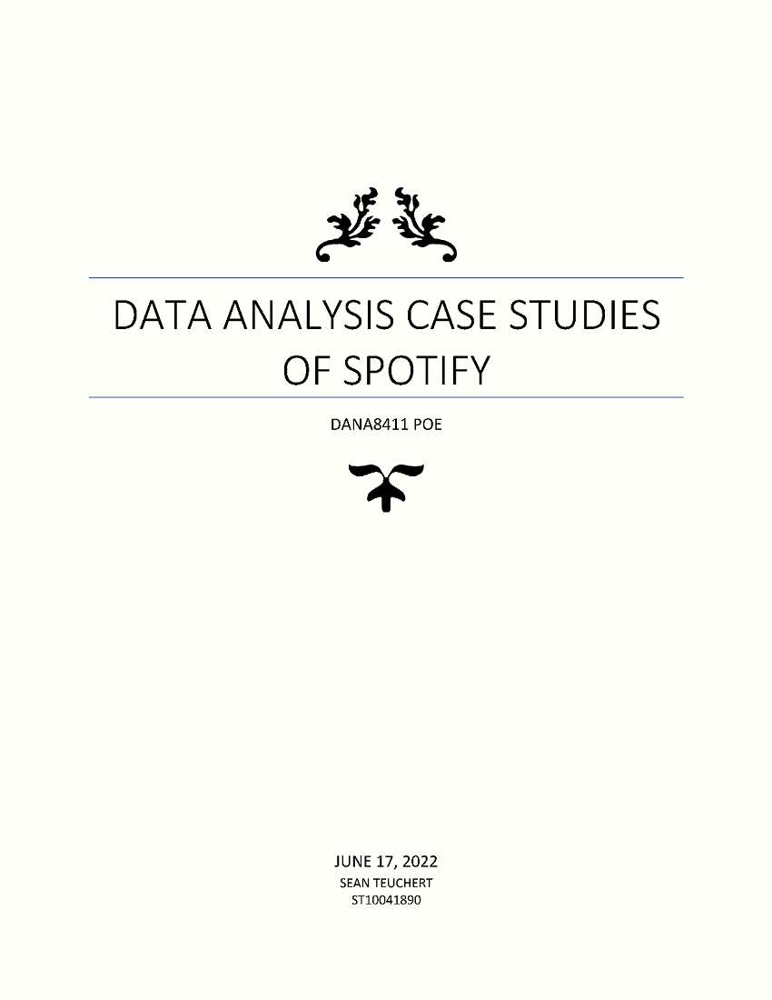
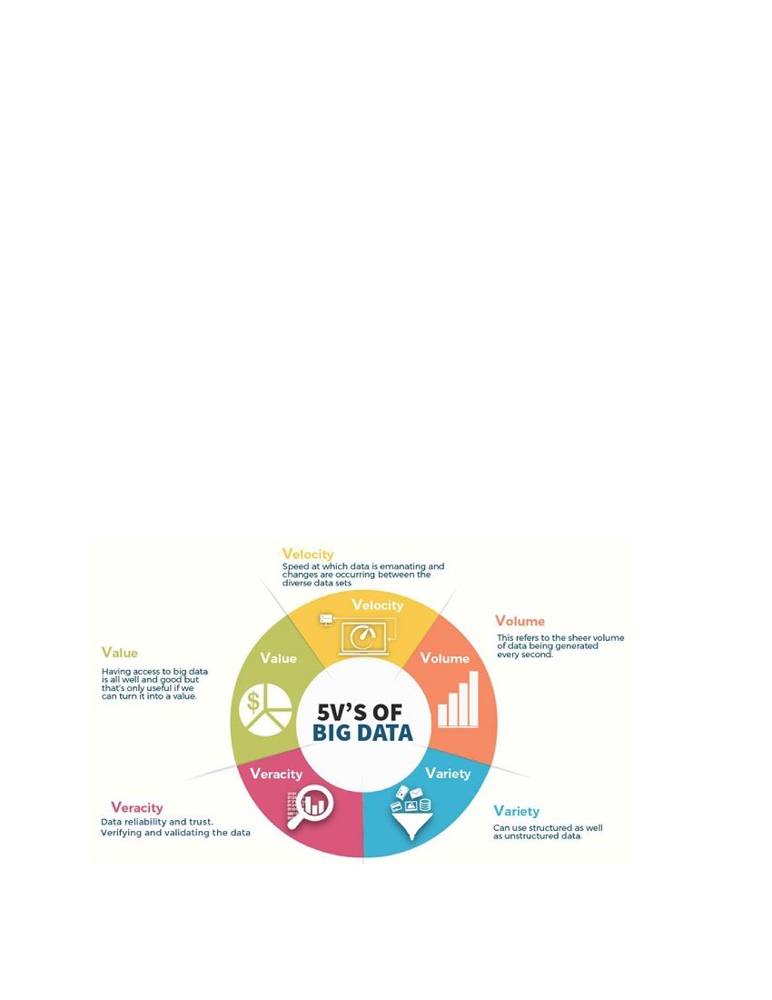

Contents
1
Introduction................................................................................................................3
2
Understanding Data Analysis....................................................................................3
2.1 Velocity................................................................................................................4
2.2 Volume ................................................................................................................4
2.3 Variety .................................................................................................................4
2.4 Veracity................................................................................................................4
2.5 Value ...................................................................................................................5
2.6 Importance of Data analysis................................................................................5
3
Descriptive vs Diagnostic vs Predictive vs Prescriptive analysis...............................5
3.1 What is Descriptive analysis?..............................................................................6
3.2 What is Diagnostic analysis?...............................................................................6
3.3 What is Predictive Analysis? ...............................................................................6
3.4 What is Prescriptive analysis?.............................................................................6
4
Descriptive Analysis: .................................................................................................7
4.1 Introduction..........................................................................................................7
4.2 Background .........................................................................................................7
4.3 Why this analysis method?..................................................................................8
4.4 What is Data Aggregation?..................................................................................8
4.5 What is Data Mining? ..........................................................................................8
4.6 Proposed Solution...............................................................................................9
4.7 Data Analysis Approach......................................................................................9
4.8 What is Machine Learning?...............................................................................10
4.8.1 What is Unsupervised Learning?................................................................10
4.8.2 What is Cluster Analysis?...........................................................................11
4.9 Data Analysis Methods......................................................................................11
4.10
Ethical and Legislative Considerations ..........................................................14
4.11
Recommendation...........................................................................................15
4.12
Conclusion .....................................................................................................16
5
Diagnostic Analysis: ................................................................................................17
5.1 Introduction........................................................................................................17
1

5.2 Background .......................................................................................................17
5.3 Why is this analysis important?.........................................................................18
5.4 What is the Probability theorem?.......................................................................18
5.5 Proposed Solution.............................................................................................18
5.5.1 Using Diagnostic Analysis from Another Angle...........................................20
5.6 Ethical and Legislative Considerations..............................................................21
5.7 Recommendation ..............................................................................................21
5.8 Conclusion.........................................................................................................22
6
Predictive Analysis: .................................................................................................23
6.1 Introduction........................................................................................................23
6.2 Background .......................................................................................................23
6.3 Why is this analysis important?.........................................................................23
6.4 What is Supervised Learning?...........................................................................24
6.5 Supervised Learning Algorithms........................................................................25
6.6 What are Overfitting and Underfitting?..............................................................26
6.7 What is a predictive model? ..............................................................................26
6.8 Proposed Solution.............................................................................................26
6.9 Building a Predictive model...............................................................................27
6.10
Analyzing Spotify Dataset..............................................................................28
6.11
Ethical and Legislative Considerations ..........................................................29
6.12
Recommendations.........................................................................................29
6.13
Conclusion .....................................................................................................30
7
Prescriptive Analysis: ..............................................................................................31
7.1 Introduction........................................................................................................31
7.2 Background .......................................................................................................31
7.3 Why is this analysis important?.........................................................................31
7.4 Data analysis Approach.....................................................................................31
7.5 What is a Prescriptive model?...........................................................................32
7.6 Proposed Solution.............................................................................................33
7.7 Ethical and Legislative Considerations..............................................................33
7.8 Recommendations.............................................................................................34
2

7.9 Conclusion.........................................................................................................34
8
Conclusion:..............................................................................................................35
9
References..............................................................................................................36
3

1 Introduction
Spotify is a proprietary Swedish audio streaming and media service provider. It was
founded on 23 April 2006 by Daniel Ek and Martin Lorentzon. Currently, it is one of the
largest music streaming platforms with over 422 million monthly active users, including
182 million paying subscribers. The company has seen large growth since 2015 and
continues to grow by making use of data analysis. According to Statista, Spotify has a
global market share in the music streaming market of 36% with the closest competitor
being Apple Music at 18% market share. Spotify’s business model is a “Freemium” model,
users can use Spotify for free but will experience advertising during their listening
experience. Spotify offers a subscription plan that removes advertising and provides
additional features. The strategy behind this subscription plan is to keep loyal customers
and generate recurring monthly revenue. Spotify’s model is successful and at the end of
2020, Spotify produced 7.85 billion in revenue. Spotify has made use of all four types of
data analysis to gain a competitive advantage over the competition.
2 Understanding Data Analysis
Data analysis is the process of collecting, modeling, and analyzing data to extract insights
that support decision-making (The Independent Institute of Education, 2022). Data
analysis aims to identify and explore patterns or trends in Big Data sets. There are five
V’s to consider when dealing with Big Data: Veracity, Volume, Variety, Velocity, and
Value.
Figure 1: 5V's of Big Data (Anik, 2019)
4

2.1 Velocity
Velocity refers to the speed at which the data is generated, and changes are occurring
between diverse datasets. Velocity consists of the following attributes: Batch, near/real-
time, and streams. The drivers of velocity are improved connectivity, competitive
advantage, and precomputed information (The Independent Institute of Education, 2022).
2.2 Volume
Volume refers to the vast amount of data that is being generated when compared to
traditional data sources. Data types like Exabyte, Zettabyte, Yottabyte, etc. make up the
attributes of volume (The Independent Institute of Education, 2022). The drivers of volume
are an increase in data sources, higher resolution sensors, and scalable infrastructures.
2.3 Variety
Variety refers to the different sources that Big Data comes from. Data can be sourced
from machines, people, and processes both from outside and inside the business. The
attributes contributing to Variety are Degree of structure (structured or unstructured) and
complexity. The drivers of Variety are mobile devices, social media, video, the study of
genetics, and the Internet of Things (IoT) (Ghavami, 2020).
2.4 Veracity
Veracity refers to the reliability, quality, and trustworthiness of the data. The data needs
to be verified and validated before it can be used. Consistency, completeness, integrity,
and ambiguity are the key attributes of Veracity. The driving factors of Veracity are cost,
need for traceability, and justification (Anik, 2019). Veracity is considered the most
important of the 5 V’s, insights and business decisions are made based on a dataset in
data analysis. An inaccurate or untrustworthy dataset can skew insights which will result
in a false prediction and the business will lose profit.
2.5 Value
Value refers to the ability to turn Big Data into useful insights or data. It is
counterproductive to perform data analysis on a dataset that will provide no useful insights
to the business. The attribute contributing to Value is Quantitative Analysis (statistical,
events, correlations, hypothetical).
2.6 Importance of Data analysis
Businesses are continuously investing and improving their data collection and data
analysis capabilities. The Internet of Things has provided businesses with access to large
amounts of data and the ability to analyze the data, but it has also greatly increased
competition. Businesses that successfully adopt a data analysis approach benefit from
the following:
5

Informed Decision making – Data analysis provides management with the ability
to make decisions on fact rather than intuition by extracting insights from a dataset.
Reduce Costs – This allows businesses to spot improvement opportunities, trends,
and patterns which enables better strategic planning and resource allocation.
Target Customers better – Improves understanding of customers which enables
targeted marketing and the ability to identify new market gaps.
The Internet of Things is continuously expanding and providing businesses will the
opportunity to collect a large amount of data about their business and customers.
Businesses that can successfully make use of Data analysis will be able to gain a
competitive advantage or solve complex business problems, increasing profits.
3 Descriptive vs Diagnostic vs Predictive vs Prescriptive analysis
The four types of Data analytics are illustrated in Figure 2.
Figure 2: Four types of Data analytics (Principa,2017)
6

3.1 What is Descriptive analysis?
Descriptive analysis is a statistical technique used to describe or summarize a set of data
(Bush, 2020). This technique can be used to identify what is happening in a business.
The most common uses for descriptive analysis are Key performance indicators
dashboards, monthly revenue reports, sales leads overview, and understanding of
customer behavior (The Independent Institute of Education, 2022). Descriptive analysis
is the simplest form of Data analysis and provides businesses with reasons for why a
trend may occur.
3.2 What is Diagnostic analysis?
Diagnostic analysis is the process of using data to determine the causes of trends and
correlations between variables (Cote, 2021). The goal of diagnostic analysis is to find out
the “root cause” of the problem or “Why did this happen?” (The Independent Institute of
Education, 2022). This helps businesses identify why a specific event may have occurred.
Three techniques that can be used for diagnostic analysis is data drilling (create multiple
views of a dataset), data mining (identify patterns and associations within large datasets)
and correlation analysis (examine how different variables link to one another) (Holliday,
2021).
3.3 What is Predictive analysis?
Predictive analysis is the use of data, statistical algorithms, and machine learning
techniques to identify possible future outcomes based on current and historical data (SAS
Institure Inc., 2022). Predictive Analysis aims to figure out what’s likely to happen (The
Independent Institute of Education, 2022). Predictive analysis can be used by businesses
to improve customer service, business operations, and marketing.
Predictive analysis uses known results to train a model that can be used to predict values
for a different data set, the modeling provides results in the form of predictions that
represent the probability of a specific variable occurring based on the estimated
significance of the input variables (SAS Institure Inc., 2022). The goal of predictive
analysis is to use historical data or current data to find patterns/trends to make
predictions.
3.4 What is Prescriptive analysis?
Prescriptive analysis is the process of using data to determine an optimal course of action
by combining descriptive, diagnostic, and predictive analysis (Cote, 2021). This will help
the business gain an understanding of what needs to be done to solve a problem or gain
a competitive advantage. This answers the question of “What should we do next?” (The
Independent Institute of Education, 2022). Artificial Intelligence is used to collect data and
process algorithms to determine the possible future events that may occur and
recommend the best course of action.
7

4 Descriptive Analysis:
4.1 Introduction
Spotify has made use of Descriptive analysis to break down the demographic of its users
by region and age. To further understand the demographic, Diagnostic analysis can be
used to understand the root cause of the demographic stats. From 2014 to 2015 there
was a clear shift in focus on which age group is Spotify’s target market. This can be
confirmed by the type of features that were released by Spotify in 2015. The following
section aims to explore the methods Spotify used to identify its target market.
4.2 Background
In recent years music streaming platforms have gained a lot of traction by increasing
convenience and creating innovative features that do the hard work for the user. Spotify
is leading the music streaming market with a large market share of 36% and generating
a massive revenue of 7.85 billion in 2020. This success is a result of Spotify effectively
making use of data analysis to identify its target market and release features that cater to
that market. Looking at historical data and the timeline of the release of certain features,
it is possible to gain an understanding of the data analysis methods and approaches
implemented by Spotify. By the end of 2014, Spotify only had 60 million users including
15 million paid subscribers. Spotify had 77 million users including 22 million paying
subscribers by the end of 2015 and in 2016 Spotify had 104 million users including 36
million paying subscribers. Within two years, Spotify managed to grow its user base by
58% and its subscriber base by 42%. Figures 3 and 4 graphically represent the growth
Spotify experienced from 2015 to 2022 (Dredge, 2015).
Figure 3: Spotify Quarterly User Growth 2015 – 2022 (Iqbal, 2022).
Figure 4: Spotify Quarterly Subscriber Growth 2015 – 2022 (Iqbal,
2022)
8

The graphs show steady growth in users and subscribers over the years and there is a
correlation between the number of free users and paid subscribers. As free users
increase, the number of subscribers increases. The focus of this section is during 2014 -
2016 and descriptive analysis can be used to identify the factors that lead to this growth.
To identify the factors leading to the large growth of Spotify over the two years, it is
important to recall the features implemented by Spotify during this period. Spotify
implemented a new payment plan in 2014 (Garun, 2017), which offered a discounted
premium subscription plan for students. Any student with a valid university email address
can apply and automatically receive a discounted price which is valid for 4 years. This
encouraged students to subscribe and remain loyal to Spotify. The following year 2015,
Spotify released a new feature called “Discover Weekly” (Pasick, 2015). This feature
generates a new playlist every week and provides users with music recommendations.
Before implementing these features, Spotify has made use of Data analysis to identify
gaps in the market and ensure a successful launch of the feature.
4.3 Why this analysis method?
Descriptive analysis can be used to identify what is happening in the business. In the
case of Spotify, this has been used to identify the target market. Data Aggregation and
Data mining are ideal for this analysis because it groups Spotify’s customer base by
demographic. Understanding the needs of the target demographic will help a business to
improve its customer satisfaction and ultimately increase profits. This is crucial for the
Spotify business model as it relies on retaining customers. The goal of this data analysis
is to gain a competitive advantage over direct competitors e.g., Apple music.
4.4 What is Data Aggregation?
Data aggregation is the process of gathering data and presenting it in a summarized
format (The Independent Institute of Education, 2022). An example of Data Aggregation
is an e-commerce website that collects different kinds of data about its customers. Data
Aggregation provides an overview of the dataset such as average customer age or
average purchases made.
4.5 What is Data Mining?
Data mining is a form of analysis and is when an analyst explores the data to uncover
any patterns or trends in the dataset (The Independent Institute of Education, 2022). The
outcome of this analysis is a visual representation of the dataset as bar graphs or pie
charts.
9

4.6 Proposed Solution
The problem stated in the introduction is that Spotify aims to improve its understanding
of its customers to identify a target market. This will enable them to improve the delivery
of new features and gain a competitive advantage in the music streaming market. From
this interpretation, we can identify the best method and approach to solve the problem.
The best approach to summarize customer data is descriptive analysis, specifically data
aggregation and data mining. When signing up for an account with Spotify, a user is
required to specify their age and the region they live in. Using this information, it is
possible to use data aggregation to gather data and build a dataset. After building the
dataset, data mining can be used to explore patterns and trends within the dataset and
identify the target market.
4.7 Data Analysis Approach
Spotify is a large business with large datasets. The amount of data generated by Spotify
is too large for a team to gather and data-mine manually. Therefore, the following
approach can be applied:
The goal of the analysis is to identify hidden patterns from a large dataset therefore
Unsupervised Learning is the best machine learning method.
The aim of using Unsupervised learning is to identify and group the data into
analyzable data therefore Cluster analysis is the most appropriate classification
method.
10


Figure 6: Unsupervised learning model (Doshi,2020)
4.8.2 What is Cluster Analysis?
Cluster analysis is the process of grouping a set of data elements in a way that said
elements are more similar to each other than those in other groups (Calzon, 2022). This
approach is used to find hidden patterns in a dataset and provide additional context. An
example of cluster analysis is grouping customers by age to identify the business’s
demographic.
4.9 Data Analysis Methods
Spotify can make use of two methods to identify its target market. The first method is
using Surveys to gather data about their customers, but it is time-consuming to survey
the whole user population. The second method which I would recommend is to use
Unsupervised learning and cluster analysis. Unsupervised learning is ideal for identifying
hidden trends and classifying data using large datasets. Cluster analysis can be used to
group customer information into subgroups which helps to break down the demographic
of the customer base. This method would have enabled Spotify to identify a gap in the
market before implementing its student subscription plan.
The gap in the market identified by Spotify surveys is the younger generation or
specifically students. A survey was performed in 2013 by Spotify, it was found that 58%
of users aged 20 or younger used playlists for their streaming. Another survey was
performed in 2015 by Spotify in the United States and the United Kingdom, it was found
that 36% of paid subscribers were between 16 and 24 years old (Statista, 2022).
12

. Figure 7 illustrates a pie chart of an example of Spotify’s demographic:
Figure 7: Spotify User Statistics by Age Group (Hlebowitsh, 2022)
The student subscription plan attracted new customers and shifted the demographic
towards the younger generation. The success of the student plan can be confirmed by
the survey performed in 2015. After identifying its target audience in 2015, Spotify
released the feature Discover weekly. This feature was targeted toward younger users as
the survey in 2013 indicates that the majority of younger users make use of playlists when
using the app.
Spotify can also implement Unsupervised learning and cluster analysis to identify what
regions the majority of its users are from. Using this information, Spotify can target
features that may be popular only in certain regions or expand on current features. An
example of this is in 2015, Spotify identified that its app is starting to become popular
around the world and not only in Europe. After identifying this, Spotify increased the
number of regions the student subscription plan is available in. This increased users and
added to the success of Spotify.
13

Figure 8 illustrates the number of users per region:
Spotify Users Per Region
20%
34%
22%
24%
Europe
North America
Latin America
Rest of World
Figure 8: Spotify User per Region chart
Spotify was able to gain a competitive advantage over its competitors by using descriptive
analysis and cluster analysis to identify its target market and gain a better understanding
of its customers. Spotify’s main target audience is millennials specifically those aged
between 16 and 24 years old. A survey performed back in 2013 showed that the majority
of users younger than 20 years old made use of playlists when using the app. This
provided Spotify with an advantage to focus their new features around playlists resulting
in the success of the “Discover Weekly” feature which ultimately increased Spotify’s
popularity amongst the younger generation. After implementing this feature Spotify saw
a growth of 27 million annual users and 14 million annual subscribers within one year
(2015-2016).
14

4.10 Ethical and Legislative Considerations
Ethics at a basic level refers to the perception of something being good or right. Ethics in
data science refers to it being performed in a way that is right, proper, acceptable, or
socially appropriate. Acceptable ethics are set by social norms or values that are
accepted within society (Saltz & Dewar, 2019). Legislation refers to a set of laws that are
put in place to govern something. When collecting and analyzing data, it is important to
consider any ethical and legislative implications to ensure the results are accurate and
participants are not harmed in the process.
Spotify is a music streaming platform, but the company still has access to collecting user
data when a user creates a new account. In Sections 4.6 and 4.7, it was discussed how
Spotify can collect and analyze user data to perform Descriptive analytics to gain a
competitive advantage by identifying a target market. When collecting data, it is important
to consider ethical practices to avoid incriminating the company and producing inaccurate
representations of the target population. An ethical consideration Spotify would have had
to deal with before collecting user data is user consent. Users have a right to their privacy
and knowing how their data is used, therefore it is required to get a user’s consent before
using their data. Spotify has considered this by requesting permission to use the
registration data for marketing purposes that are provided by the user.
Figure 9 illustrates the Spotify Sign-up page and the information required from a user:
Figure 9: Spotify Sign-Up Page
15

Before a User can sign up and start using Spotify’s services, they are required to agree
to share their registration data with Spotify. Spotify has also stated what they plan to use
the data for, therefore this feature meets the requirements of User consent.
When a user creates a new Spotify account, it is required for the user to enter their email,
password, name, age, and gender. This means that Spotify has access to the personal
information of its users. In a South African context, every person has the right to protect
their privacy and personal data due to The Protection of Personal Information Act, Act
No.4 of 2013 (POPI ACT) (Welz, 2016). The POPI Act states that anybody who keeps
personal information must take steps to prevent the loss, damage, and unauthorized
destruction of data as well as prevent unlawful access or processing of this personal
information (Welz, 2016). The maximum penalty for breaching the act according to
sections 100-106 is a fine or imprisonment not exceeding 10 years. According to the POPI
Act, Spotify will have to ensure that the personal information of users is only accessible
by authorized employees of the company, “special personal information” like race,
religious beliefs, sex, etc. require permission before using the data and all personal
information must be protected from unlawful access or usage. Spotify has met these
requirements by requesting user consent to use “special personal information” and the
company uses an Apache Cassandra database which has a good reputation for being
scalable and having high availability while still having high security.
4.11 Recommendation
After analyzing the case study, a recommendation for Spotify is to build an Unsupervised
Learning model to analyze their data. A survey is time-consuming, and it is impossible to
survey the entire population. Another problem with surveys is that it is a small sample
group and calculations are then projected onto the entire population. An Unsupervised
learning model will be able to process a much larger set of data and it will continuously
improve in accuracy as more data is provided to the model. Spotify also has access to
customer information like age and region. There is no need for them to create surveys
and process the data manually when Spotify already have all the raw information they
need. The raw data just needs to be classified and grouped by age and region which is
possible with an Unsupervised learning model. An Unsupervised learning model will also
increase processing efficiency and reduce time spent on collecting and analyzing data
which is important if a business wants to be flexible to market change. After considering
the ethical and legislative implications, a suggestion for Spotify would be to create an in-
depth Terms & Conditions policy that covers all aspects of user data and how the
information is used. Only requesting user consent on signing up can potentially create
grey areas and leave Spotify vulnerable to being implicated by a country’s legislation.
Spotify is an international company; therefore, legislation may differ depending on the
country. A Term & Conditions Policy can be used to address each country’s legislation
and ensure all bases are covered.
16

4.12 Conclusion
Spotify managed to identify its target market by using descriptive analysis combined with
cluster analysis and the account information provided by users when registering with their
service. After identifying its target market, Spotify introduced the student subscription plan
to attract more customers from that target audience. Once their target market had been
established, Spotify introduced a new feature (Discover Weekly) that caters to the needs
of their target customers. An improvement that can be made by Spotify is to invest in an
Unsupervised Learning model instead of relying on surveys. This will increase the
adaptability of Spotify to market changes or trends. Spotify has also addressed ethical
and legislative concepts by requesting user consent and informing the user how their data
will be used. A suggestion for Spotify is to create a Terms & Conditions Policy that
addresses each country’s legislation in which they operate in.
17

5 Diagnostic Analysis:
5.1 Introduction
Diagnostic analysis combined with probability theorem can be used to identify the reason
behind Spotify having a large demographic of Millennials. It is important to understand
the reason behind a business’s target market to improve their understanding of their
customers. Spotify’s main source of revenue is through its subscription models which rely
on recurring payments and a loyal customer base. Understanding the preferences of their
customers and delivering features catered to their target market’s needs will give Spotify
a competitive advantage over the music streaming market.
5.2 Background
According to statistics provided by Damjan, 55% of Spotify’s user base is Millennials.
Users aged between 25 to 34 years old make up 29% of the 55% and users between the
ages of 18 – 24 years old make up 26% of the 55%. The target audience for Spotify is
Millennials or users between the age of 18 – 34 years old. Figure 10 illustrates the age
demographic of Spotify:
Figure 10: Spotify User Statistics by Age Group (Hlebowitsh, 2022)
18

5.3 Why is this analysis important?
Diagnostic analysis will help a business identify the root cause of a trend or variable.
Identifying a target market is important for a business but it is equally important to
understand their customers and why they attract that specific target market.
Understanding the preferences of customers will reduce costs on unnecessary features
and advertising. By using diagnostic analysis and probability theorem it is possible to
identify why Spotify is popular amongst Millennials.
5.4 What is the Probability theorem?
The probability theorem is a branch of mathematics that evolved from the investigation of
social, behavioral, and physical phenomena that are influenced by randomness and
uncertainty (The Independent Institute of Education, 2022). The probability theorem is
used to identify the likelihood of an outcome occurring by dividing the target outcome by
the total number of outcomes. In the case of Spotify, it is possible to work out the
probability of a generation making use of the application based on their likelihood of using
a mobile phone and the internet.
The Formula for basic probability is:
P(A) = number of outcomes / total number of outcomes
This formula is used to find out the probability of a single event occurring, but the
diagnostic analysis is looking at more than one variable therefore the following formula is
used:
P (A AND B) = P(A) * P(B)
This formula is used because both events may occur at the same time and both events
are independent.
5.5 Proposed Solution
Using Diagnostic analysis, it is possible to identify the root cause for Spotify being popular
amongst Millennials. The Internet of Things (IoT) has developed alongside the Millennial
generation. Millennials are more likely to adapt and accept the internet of things and its
development. (Vogels, 2019) states that in 2019, 93% of Millennials (ages 23 - 38) own
smartphones compared with 90% of Generation X (ages 39 to 54) own smartphones,
68% of Baby Boomers (aged 55 to 73), and 40% of the Silent Generation. When
comparing broadband internet service 78% of Millennials (78%), Gen Xers (78%), Baby
Boomers (74%), and 45% Silent Generation.
19

Using probability theorem, it is possible to calculate the probability of a generation owning
a smartphone and subscribing to a broadband internet service:
Key: P (probability), S (smartphones), B (broadband internet service)
Millennials: P (S AND B) = 0.93 * 0.78 = 0.7254 or 72.54%
Generation X: P (S AND B) = 0.90 * 0.78 = 0.702 or 70.20%
Baby Boomers: P (S AND B) = 0.68 * 0.74 = 0.5032 or 50.32%
Silent Generation: P (S AND B) = 0.40 * 0.45 = 0.18 or 18%
Probability of Using a Smartphone and Broadband Internet by
Generation
18
72.54
50.32
70.2
Millennials
Generation X
Baby Boomers
Silent Generation
Figure 11: Probability of Using a Smartphone and Broadband Internet by Generation
Millennials have the highest probability to use smartphones and broadband internet with
a probability of 72.54%, Generation X is a close second with 70.2%, Baby Boomers is
third with 50.32% and Silent Generation is last with 18%. A trend is noticeable that the
older the generation is the less likely they are to use mobile devices/applications.
Using these statistics and probability theorem, a trend is identifiable that Millennials are
more likely to make use of smartphones and the Internet of Things. This provides Spotify
with a clear reason for why they are popular amongst the younger generation compared
to other generations. The younger generation suites their business model as they aim to
keep long-term customers and it provides the potential for scalability due to Millennials
forming 23% of the world population (Neufeld, 2021).
20

5.5.1 Using Diagnostic Analysis from Another Angle
Diagnostic analysis can be further used to gain a better understanding of customer
behavior. A study performed by Spotify showed that three out of four Millennials say that
music is part of how they define who they are and 84% of Millennials state that their music
tastes span across multiple genres (Spotify, n.d.). This diversity in music tastes translates
to other aspects of Millennials’ lives: 74% believe in gender fluidity, 33% have multiple
careers simultaneously and 64% believe that labeling people is unnecessary. Spotify was
faced with a problem of a large diverse audience or market. This makes marketing
challenging due to the wide variety of users and their preferences. Spotify has solved this
problem by making use of Diagnostic analysis and probability theorem to gain an
understanding of their customer’s behavior.
Music has become a part of Millennials’ daily life, whether it is to aid with a negative or
positive situation (Spotify, n.d.). A study in 2016 by Northwestern University found that
young people prioritize convenience when discovering new music (Koerbel, 2016). By
understanding what their customer’s behavior patterns are. Spotify identified seven key
audio streaming categories: “Working, Chilling, Chores, Gaming, Working out, Partying
and Driving” (Feature was released in 2015). Based on which category a user picks the
corresponding type of music that suits that situation is played. This has allowed Spotify
to become a companion in the daily lives of Millennials. The audio streaming categories
provide users with a quick and convenient way to find new music that matches their daily
activities.
21

5.6 Ethical and Legislative Considerations
In this Section, Spotify has performed multiple surveys and conducted Diagnostic
analysis. In Section 4.10, the concepts of User consent and the POPI act were discussed
in detail. These concepts apply to this section, when collecting data via surveys it is
required to ask for consent and inform the participant of how the data will be used. This
also aligns with the requirements of the POPI act therefore, the same strategies that were
applied in Section 4.10 can be applied when collecting data via surveys.
Two ethical considerations that were not discussed in Section 4.10 relating to surveys are
Voluntary participation and anonymity. According to research standards, participants may
not be forced into partaking in a survey, and they are free to leave at any point during the
research. Spotify can only address this concept by informing participants that they are
volunteers and may request to stop participating in the survey. Participants have a right
to their privacy and protect their personal information. To ensure that a participant’s
privacy is protected, Spotify should use dummy variables or names for any sensitive
answers for example: using an alias instead of the participant’s name. Using dummy
variables or names will ensure that a participant remains anonymous, and their privacy is
still intact.
Two ethical concepts explored by (Welz, 2016) that apply to this case study are data
accuracy and validity. Data accuracy and validity refer to the accuracy of the data and the
appropriate use of the data. This is referred to as the “fitness of purpose”, in other words,
the data must not be taken out of context to produce a result that doesn’t represent the
true problem that the dataset is trying to solve. During Diagnostic analysis the goal is to
find the “root cause” of a problem, therefore Spotify needs to ensure its data analysis
methods contain no bias and includes outliers. Including outliers will create a true
representation of the dataset. Using established analysis methods (Probability theorem),
will increase the accuracy, validity, and trustworthiness of the analysis as these methods
are created using a high set of standards and have been proven to work.
5.7 Recommendation
From the above results in section 5.5, the best recommendation is to focus on the current
target market. Millennials have a much higher chance to make use of the application due
to them growing up alongside the development of the Internet of Things. Mobile phones
and broadband internet are more common amongst Millennials which is the only
requirement to use Spotify. After analyzing section 5.5.1, it is clear that Millennials place
a high value on convenience and music plays a large role in their lives. Any new features
Spotify implements should focus on convenience and give the user a feeling that the app
is doing the heavy lifting. When performing surveys and collecting data Spotify must keep
ethical practices in mind. Two suggestions to ensure that Spotify remains ethical in its
Diagnostic analysis are using dummy variables for sensitive information to protect its
user’s data and using approved data analytic methods to increase the accuracy, validity,
and trustworthiness of the results.
22

5.8 Conclusion
The root cause of Spotify’s popularity amongst Millennials can be pinned down to three
factors. Millennials grew up during the rapid expansion of the Internet of Things which
has made access to mobile devices and broadband internet more common amongst this
generation. Young people seek convenience when searching for new music which Spotify
has achieved by implementing music categories that complement daily activities and the
“Discover” feature that provides users with a personalized and convenient way to find
new music. Spotify has managed to understand the daily lives of Millennials and target
their daily activities with music that complements these activities. This results in Spotify
subconsciously becoming a part of the user’s daily life and provides the user with music
appropriate for all kinds of moods or environments. The implementation of these features
has contributed to the growth of Spotify from 2014 to 2016. Spotify has also considered
the ethical and legislative implications that come with collecting and analyzing user data.
Spotify addressed these issues by using sound data analysis methods to ensure the
results contain no bias and truly represent the population. Spotify has also requested user
consent when collecting and analyzing user data. In the researcher’s opinion, Spotify has
successfully performed Descriptive analysis to understand who their demographic is and
has successfully performed Diagnostic analysis to understand why this is their target
market and their behavior. Understanding its target market has helped Spotify implement
new features that cater to the needs of its target market which ultimately increased the
annual user and subscriber count.
23

6 Predictive Analysis:
6.1 Introduction
Spotify is one of the most popular music streaming platforms with over 422 million users
in 2022. According to Figures 3 and 4, Spotify has seen consistent growth in users and
subscribers. In this work, we aim to explore how Spotify has implemented Predictive
analysis to complement the release of new features. To remain ahead of the market,
Spotify has made use of Predictive and Prescriptive analysis. Spotify has made use of
Machine Learning to implement a recommendation page known as “For You” that
identifies potential songs a user may be interested in. In 2015, Spotify saw a large growth
of 17 million users and 7 million subscribers from 2014. From this interpretation, we can
identify that the two new features (Recommendation page and Discover Weekly) released
in 2015 had a big impact on the growth of Spotify. The analysis was intended to
understand how Machine Learning can be implemented to predict a user’s song
preference and explore the characteristics of different variables used to identify similar
songs.
6.2 Background
Over the years Spotify has managed to identify its target market and release new features
that meet the preferences of its target market. Spotify has become well known for being
a platform that is easy and convenient to find new music on. The application focuses on
music discovery rather than being a music library, this can be confirmed by Spotify’s home
page being a personalized music recommendation page. Spotify has made use of
Machine Learning to predict what songs a user may listen to based on the user’s liked
songs. Spotify has made use of predictive analytics and predictive models to recommend
songs to users by comparing the user’s liked songs to other songs that consist of similar
attributes (Danceability, loudness, pitch, etc.).
6.3 Why is this analysis important?
Using Descriptive analysis, it was determined that the target market is the younger
generation and Diagnostic analysis improved our understanding of why Millennials are
more likely to use Spotify. A key factor to the reason why Millennials use Spotify is how
easy it is to discover new music. This analysis will improve the field of knowledge of how
Spotify has made use of Machine Learning to automate music suggestions. The analysis
helps Spotify understand its users’ preferences and automatically predict songs the user
may like. This gives Spotify a competitive advantage over the market by catering to the
needs of users.
24

6.4 What is Supervised Learning?
Supervised Learning is a type of Machine learning technique, refer to section 4.8 for an
explanation of Machine learning. Supervised learning consists of input variables (X) and
output variables (Y). A Machine Learning algorithm is used to learn the mapping function
from the input to the output. It is called Supervised learning because we provide the model
with training data (thought of as a teacher) that supervises the learning process.
Supervised Learning requires the dataset to be structured and contain labeled data
(which has been labeled with certain properties/characteristics). Supervised Learning can
be used to solve Classification and Regression problems.
My interpretation of the problem leads us to believe that classification was used by Spotify
to solve it. Classification problems require the use of machine learning algorithms that
learn how to assign a class label to the input data. For example, there are three class
labels (Apple, Banna, Orange). A machine learning algorithm cannot identify the
differences, but it is possible to define the attributes of the three classes (Apple = 0, Banna
= 1, Orange = 3). Once a machine learns from the labeled training data, it can identify
and allocate the class labels. An accurate model will predict values that are similar to the
actual dataset and follow a similar trend. Spotify has made use of Supervised learning;
they provide a predictive model of historical data about song attributes and use
classification to identify songs that consist of similar attributes
25

6.5 Supervised Learning Algorithms
Supervised Learning Algorithms try to model relationships and dependencies between
the target prediction output and the input features to predict the output values for new
data based on the relationships previously learned (Fumo, 2017). Figure 12 illustrates the
different Supervised Learning algorithms:
Figure 12: Supervised Learning Algorithms Inspired by (Rajbanshi,2021)
26

6.6 What are Overfitting and Underfitting?
Underfitting is when a statistical model or machine learning algorithm cannot capture the
underlying trend of the data (The Independent Institute of Education, 2022). This is a
problem because underfitting can reduce the accuracy of a model.
Overfitting is when a statistical model or machine learning algorithm is trained with a lot
of data and the model starts to learn from the noise and inaccurate data entries in the
dataset (The Independent Institute of Education, 2022). This is a problem because the
model will provide inaccurate results when a new dataset is used.
6.7 What is a predictive model?
A predictive model is a statistical technique using machine learning and data mining to
predict and forecast possible future outcomes by using historical data (Ali, 2020).
Predictive models reduce time, effort, and costs in forecasting business outcomes. To
provide a more accurate prediction, variables like environmental factors, competitive
intelligence, and market conditions can be factored into the mathematical equation.
6.8 Proposed Solution
From my interpretation of the problem, the data analysis approach that should be taken
is to build a predictive model that can be used to automate the process of suggesting new
music to Spotify users. This will provide Spotify with a competitive advantage over the
music streaming market by gaining a better understanding of customer preferences.
Before jumping into the analysis of the problem and data, it is important to understand
what a predictive model is.
27

6.9 Building a Predictive model
There are five steps to building a predictive model to successfully implement Predictive
analysis. Figure 13 illustrates the steps that should be followed when implementing
Predictive analysis:
Figure 13: Steps of Predictive Analysis (Salleh, 2013)
Data Access: Define the desired business outcomes and identify the appropriate
dataset to use during analysis.
Exploration: Identify relationships between variables and visualize the dataset
using graphs
Data Transform: Clean the data using data cleaning techniques
Modeling: Identify the best algorithm that provides the most accurate solution to
your business problem. Next, Train the model using train and test data (split the
dataset into train and test data).
Validation: Evaluate the accuracy and performance of the model to determine if
the predicted results show an accurate representation of the dataset. Apply the
model to a different dataset to identify the performance of the model.
Implementation: A predictive model is only valuable to a business once it has been
integrated into the business processes or operations.
28

6.10 Analyzing Spotify Dataset
Spotify has assigned variables to different attributes of a song. This helps Spotify identify
which songs are similar or are from the same type of genre.
Dataset link: https://www.kaggle.com/datasets/bricevergnou/spotify-recommendation
Figure 14: Example Dataset (Kaggle,2021)
Dataset Variables:
Danceability
Energy
Key
Loudness
Mode
Speechiness
Acousticness
Instrumentalness
Liveness
Valence
Liked
Using these variables, Spotify can use classification algorithms in their predictive model
to identify songs that consist of similar attributes. This will enable Spotify to build a
predictive model that can predict what song a user might like based on the user’s currently
liked songs and its variables.
29

6.11 Ethical and Legislative Considerations
When creating a machine learning model, the data analyst needs to remain neutral and
use the data in a way that produces results that truly represent the dataset. An example
of misusing data is selecting data from a town or neighborhood to create a representation
of the whole population e.g., the whole country. This will create a biased algorithm that
will produce inaccurate results when given a new dataset.
Spotify has addressed this problem by building its predictive models based on music
attributes and individual user preferences. The attributes of each song are defined by a
set of standards and added to a separate dataset beforehand. Based on the songs that
a user liked, a new dataset is created that contains only the user’s liked songs which the
model then uses to predict potential new songs that the user may like. This ensures that
the model will remain unbiased and make accurate predictions for that specific user due
to only containing user-specific data.
A predictive model is always vulnerable to some sort of bias due to the nature of how the
model is created (Wolfe, 2021). Spotify’s data analyst needs to be a trustworthy and
unbiased person. When creating a predictive model the data analyst must select an
algorithm, this creates an opportunity for bias without any intention of being biased
therefore, the data analyst must be ethical and aim to produce the most accurate results
without influencing the model. The data analyst can further increase their trustworthiness
and the validity of the model by evaluating the model using a score test like an accuracy
score or R-squared score. Using a score test will provide the data analyst with factual
information about their algorithm and how well the model performs.
6.12 Recommendations
After analyzing the case study, Spotify should implement a predictive model to gain a
better understanding of their users and to create an automated recommendation page
that is personalized for each user. This feature will increase customer satisfaction
because customers will have a better user experience when trying to find new music.
When training the model, it is important to train the model with a large data set. This will
reduce the potential for Underfitting and if Overfitting occurs, a suggestion is to reduce
the size of the dataset until the model produces accurate results. The model aims to
identify and group songs that consist of similar variables therefore the best algorithm to
use is a classification algorithm. From this interpretation, we can identify that Random
Forest is likely to be the best algorithm. Random Forest algorithm is ideal for large
datasets and the algorithm will allow the model to continuously learn and improve. Spotify
is a large company; therefore, it can be difficult to track employees and their work. A
suggestion for Spotify to address the ethical considerations in Section 6.11 is to
implement an authority chain that requires the data analyst to seek approval before
shipping any predictive models to production. This will ensure that the model has been
evaluated for bias or potential inaccuracies. Another suggestion is for the data analyst to
30

evaluate the model’s performance using already established methods or algorithms
(sklearn accuracy score test, R-squared score), this will guide the data analyst to identify
any possible areas for improving the model for example: changing the Hyper Parameters
of the algorithm can influence the accuracy of the model, therefore it is best practice to
always identify and use the Hyper Parameters that produced the best accuracy result.
6.13 Conclusion
Spotify has seen a large growth in users and subscribing in 2015 after releasing two new
features (Recommendation page and Discover Weekly). The success of these features
is due to the predictive analysis and predictive modeling that was implemented by Spotify.
A predictive model enables Spotify to recommend new music to each user which creates
a feeling of personalization and that the company cares about it each user. This has
enabled Spotify to cater to the needs of its target market and gain a competitive
advantage over the market. Spotify has a total of 36% market share in the music
streaming market, this confirms the successfulness of the predictive analysis and the
competitive advantage gained. Spotify has also remained ethical by ensuring its
predictive model contains no or little bias by only using user-specific data in the dataset.
Implementing an authority chain that requires the data analyst to request approval of the
model will also ensure that the data analyst’s results are a true representation of the
dataset.
31

7 Prescriptive Analysis:
7.1 Introduction
Spotify released a new feature in 2015 called Discover Weekly. It was made available to
all users, free users, and subscribers. Discover Weekly is a playlist that is automatically
generated by Spotify and the songs are selected based on the user’s liked songs. This
feature aims to provide users with a new playlist each week that has been personalized
for that user. This promotes the discovery of new music and makes finding new music
easier for users. Prescriptive analysis has been used to implement the Discover weekly
feature and provided Spotify with a competitive advantage over the music streaming
market.
7.2 Background
After releasing the Discover Weekly feature in 2015, Spotify has seen consistent growth
in free users and paid users. Within one year of the release of the Discover Weekly
feature, Spotify gained 27 million annual users and 14 million subscribers. Spotify has
managed to increase its annual users by 26% and subscribers by 39% within one year.
Apple Music is Spotify’s direct competitor in the music streaming market. Apple music
only had a total of 11 million users in 2015. Spotify managed to grow more within a year
than Apple music had in total users. Spotify’s growth can be pinned down to its successful
data analysis methods which empower them to deliver impactful new features that cater
to its target market.
7.3 Why is this analysis important?
After performing a Diagnostic analysis in section 5, it is clear that Spotify’s target market
places a high value on convenience and discovering new music. It is also important for
Spotify to retain customers as they rely on a subscription model to generate revenue.
Prescriptive analysis will give Spotify the tools to identify a user’s preference and
automate the decisions revolving around suggesting new music. This will ensure that the
app’s music-suggesting algorithm grows alongside the user’s preferences. Meeting the
needs and preferences of users will result in a satisfied customer, ultimately increasing
the number of customers retained.
7.4 Data analysis Approach
The approach used by Spotify is a two-set approach to solve the problem of automating
the recommendation feature. Achieving this goal will give Spotify a competitive advantage
over the music streaming industry
Implement a Predictive model for song suggestions
Build a playlist that refreshes weekly based on the user’s liked songs.
32

7.5 What is a Prescriptive model?
Descriptive and Prescriptive analysis work hand in hand with one another. The main
difference between the two is that Prescriptive analysis utilizes a similar modeling
structure as Predictive analysis, but it accounts for all business variables and integrates
automation of decision making. A Prescriptive model considers all relevant factors to
determine an optimal course of action. This type of analysis yields recommendations for
the next steps a business should take.
Figure 15: Prescriptive Model diagram (Guilfoyle, 2022)
Inputs: A dataset is used as training and test data.
Model: this step includes machine learning algorithms
Prediction + Decision Support: This step includes the predicted outcome and the
support framework for decision making.
Optimized Decision: This is the result after performing an analysis and applying
the decision framework.
One of the benefits of a Prescriptive model is that it can be connected to Enterprise
tools and systems. This allows for the automation of feedback and improvement of the
model. A prescriptive model can gather feedback and adapt its predicted outcome
based on the feedback received therefore resulting in the model automatically
improving its accuracy. The more accurate a model is, the more accurate the predicted
outcomes will be.
33

7.6 Proposed Solution
Spotify has access to a large real-time data set that is provided by its users. Spotify can
access information about what music their users listen to and their user behavior (Time
spent using the app, data used, etc.). This information can be used to improve the
Predictive model suggested in section 6. The proposed solution by Spotify to meet the
music discovery needs of their customers is the Discover Weekly feature. The Discover
Weekly feature is an automatically generated personalized playlist that refreshes each
week. A predictive model like section 6 can be implemented to identify suitable songs that
a user may like based on the type of music they have previously liked. Spotify only has
to add decision support to the predictive model to implement a prescriptive model for
automating the process of building a personalized playlist.
Implementing Prescriptive analysis will allow for this feature to be automated. A user’s
preferences may change therefore the predictive model must be flexible and able to
change as a user likes more songs. This also supplies the model with a constant feed of
real-time data. Providing a predictive model with a continuously growing amount of
training data will help the model improve in accuracy over time. This will ensure that the
model doesn’t become outdated and will always understand the users’ preferences. A
Prescriptive model will allow for informed real-time and long-term business operations as
the model makes decisions based on both real-time data and historical data. From a
business’s point of view, it is too time-consuming to have employees generate these
playlists for each user manually. A Prescriptive model will save time and passively gain a
better understanding of the user than an employee could.
7.7 Ethical and Legislative Considerations
A data analyst’s job is not only to create a model but to also provide interpretations for
the results produced by the model. Predictive and Prescriptive models are statistical in
nature and provide no guarantees instead it informs us about what areas have an
increased probability of an outcome that may guide us to act differently (Saltz & Dewar,
2019). Due to this, it is the data analyst’s ethical responsibility to explain the model and
provide implications for using the model. In simple terms, the data analyst has a duty to
explain the model in simple terms that is understandable by a non-data analyst e.g.,
directors or managers, and present the results of the analysis. A data analyst for Spotify
would be required to explain their model in-depth, the implications of using the model,
and present the model results. The ethical and legislative considerations and
recommendations discussed in Section 6.11 can also be applied to this section as the
predictive and prescriptive model of Spotify work hand in hand.
Another ethical consideration that needs to be addressed by Spotify is Inside trading.
Inside trading refers to the practice of purchasing or selling a publicly-traded company’s
securities (stocks or shares) while in possession of material information that is not public
yet (Coporate Finance Institute, 2022). Data analysts are required to have information
34

about the business to perform their job. This means that data analysts have access to
sensitive information or decision-making-related information.
7.8 Recommendations
Spotify has access to user behavior information which can be used to further improve the
model. The length of the playlist can be altered according to the user’s average daily app
usage time. This will encourage a user to make use of the playlist instead of viewing it as
a too-large task to complete. Overwhelming a user with a large playlist may result in the
user ignoring the feature as it is too time-consuming to listen to. Another recommendation
is to make use of Decision Trees or Random Forest algorithms for the prescriptive model
(Refer to section 6.5 about algorithms). After performing research, the ideal algorithm is
Random Forest. Random Forest is similar to Decision Trees but in simple terms, the
difference is the Random Forest algorithm consists of many small Decision Trees which
results in a more accurate result. Random Forest is the suggested algorithm for building
customer profiles because it considers all the possible outcomes and selects the most
appropriate outcome. Random Forest Algorithm is also ideal for analyzing real-time data.
To ensure that Spotify’s data analysts remain ethical, a suggestion is to include a Non-
Disclosure Agreement in their employment contract. This will ensure that the data analyst
does not leak any business information and implicates the data analyst if they inside trade
while still protecting the company.
7.9 Conclusion
Spotify’s user preferences are constantly changing due to new songs being released
frequently and the nature of their target market. A predictive model will give Spotify a
competitive advantage in recommending new songs to users which will result in satisfied
customers, but it still requires the user to find new music by themselves. A prescriptive
model will help eliminate this. By creating a Weekly playlist that is personalized to the
user’s preferences, it will automatically play new songs to users. If the user likes a song
in that playlist, it will provide the prescriptive model with more data about the user and
improve the accuracy of the model. Eliminating the hard work in discovering new music
will give Spotify a competitive advantage over the market. The Discover Weekly feature
will also give users a reason to use the application each week. Spotify relies on retaining
customers and keeping them satisfied, implementing a prescriptive model will help satisfy
the music needs of customers. Ultimately resulting in a greater return in profit due to
customer satisfaction. To ensure a predictive and prescriptive model remain ethical and
produces accurate results that truly represent a dataset, it is important to ensure that the
data analyst is ethical in their practices. Spotify can train its data analysts to adopt an
ethical approach by setting a standard that requires the analyst to explain their model and
the analysis process. Requesting the data analyst to sign a Non-Disclosure Agreement
will protect Spotify against Inside Trading and leaking of sensitive information.
35

8 Conclusion:
Spotify has made use of all four types of data analytics. Descriptive analysis was used to
identify their target market and gain an understanding of their demographic. Diagnostic
analysis was performed afterward to gain an understanding of the root cause of their
demographic and to build a generalized customer profile of their target market. The
information extracted from the generalized customer profile is that the main age group is
Millennials and they put a high value on convenience when looking for music. Predictive
analysis has been used to gain an understanding of customers’ music preferences by
analyzing the songs they listen to or like. Based on this information, the predictive model
suggests songs that consist of similar attributes. This feature increased the convenience
and efficiency of recommending songs to a user. Prescriptive analysis was implemented
in a new feature released by Spotify (Discover Weekly). This feature removed the hard
work of creating a new playlist for the user and automatically builds a playlist based on
the user’s preferences. In each case study, Spotify has addressed the possible ethical
and legislative considerations that apply to its data collection and analyses process.
Spotify has successfully implemented Data analysis to solve business problems and gain
a competitive advantage over the music streaming market. Spotify has a market share of
36% while its direct competitor Apple music only has an 18% market share. From this
Interpretation, it is possible to confirm that Spotify has successfully implemented Data
analysis to gain a competitive advantage.
36

9 References
Ali,
R.,
2020.
Oracle
Netsuite.
[Online]
Available
at:
https://www.netsuite.com/portal/resource/articles/financial-
management/predictive-
modeling.shtml#:~:text=In%20short%2C%20predictive%20modeling%20is,generated%
20to%20forecast%20likely%20outcomes.
[Accessed 22 05 2022].
Anik,
2019.
Techentice.
[Online]
Available
at:
https://www.techentice.com/the-data-veracity-big-data/
[Accessed 22 05 2022].
Bush,
T.,
2020.
Pestle
Analysis.
[Online]
Available
at:
https://pestleanalysis.com/descriptive-analysis/
[Accessed 20 04 2022].
Calzon,
B.,
2022.
Datapine.
[Online]
Available at: https://www.datapine.com/blog/data-analysis-methods-and-techniques/
[Accessed 22 05 2022].
Coporate
Finance
Institute,
2022.
Insider
Trading.
[Online]
Available
at:
https://corporatefinanceinstitute.com/resources/knowledge/trading-
investing/what-is-insider-trading/
[Accessed 16 06 2022].
Cote,
C.,
2021.
Harvard
Business
School
Online.
[Online]
Available
at:
https://online.hbs.edu/blog/post/prescriptive-analytics
[Accessed 24 04 2022].
Cote,
C.,
2021.
Havard
Business
School.
[Online]
Available
at:
https://online.hbs.edu/blog/post/diagnostic-analytics
[Accessed 24 04 2022].
D.,
2022.
Kommandotech.
[Online]
Available
at:
https://kommandotech.com/statistics/spotify-user-statistics/
[Accessed 23 05 2022].
Dredge,
S.,
2015.
The
Guardian.
[Online]
Available at: https://www.theguardian.com/technology/2015/jan/12/spotify-60m-users-
15m-subscribers
[Accessed 22 05 2022].
Fumo,
D.,
2017.
Towards
Data
Science.
[Online]
Available at: https://towardsdatascience.com/types-of-machine-learning-algorithms-you-
37

should-know-953a08248861
[Accessed 22 05 2022].
Garun,
N.,
2017.
The
Verge.
[Online]
Available at: https://www.theverge.com/2017/4/19/15362104/spotify-student-discount-
program-33-new-countries
[Accessed 22 05 2022].
Ghavami, P., 2020. Big Data Analytics Methods: Analytics Techniques in Data mining,
Deep Learning and Natural Language Processing. 2nd ed. s.l.:Walter De Gruyter Inc..
Hlebowitsh,
N.,
2022.
Siteefy.
[Online]
Available
at:
https://siteefy.com/spotify-
statistics/#:~:text=Statistics%20for%20Spotify%20User%20Demographics,-
On%20the%20whole&text=29%25%20of%20Spotify%20users%20are,male%20and%2
044%25%20are%20female.
[Accessed 22 05 2022].
Holliday,
M.,
2021.
Oracle
Netsuite.
[Online]
Available
at:
https://www.netsuite.com/portal/resource/articles/data-
warehouse/diagnostic-analytics.shtml
[Accessed 24 04 2022].
Iqbal,
M.,
2022.
Business
of
Apps.
[Online]
Available
at:
https://www.businessofapps.com/data/spotify-statistics/
[Accessed 22 05 2022].
Koerbel,
L.,
2016.
Forbes.
[Online]
Available
at:
https://www.dropbox.com/s/r1mb4zmfkw8vnjp/MMD%20Whitepaper%20vFinal.pdf?dl=0
[Accessed 22 05 2022].
Neufeld,
D.,
2021.
Weforum.
[Online]
Available
at:
https://www.weforum.org/agenda/2021/11/millennials-world-regional-
breakdown/
[Accessed 22 05 2022].
Pasick,
A.,
2015.
Quartz.
[Online]
Available at: https://qz.com/571007/the-magic-that-makes-spotifys-discover-weekly-
playlists-so-damn-good/
[Accessed 22 05 2022].
Saltz, J. S. & Dewar, N., 2019. Data science ethical considerations: a systematic literature
review and proposed project framework. Ethics Inf Technology, Volume 21, pp. 197-208.
38

SAS
Institure
Inc.,
2022.
SAS.
[Online]
Available at: https://www.sas.com/en_za/insights/analytics/predictive-analytics.html
[Accessed 24 04 2022].
Spotify,
n.d.
Spotify
Advertising.
[Online]
Available
at:
https://ads.spotify.com/en-US/millennials-on-spotify/
[Accessed 23 05 2022].
Statista,
2022.
Statisa.
[Online]
Available at: https://www.statista.com/statistics/449136/spotify-paid-subscriber-age/
[Accessed 22 05 2022].
The Independent Institute of Education, 2022. Data Analytics 1. 1st ed. Cape Town: IIE.
Vogels,
E.
A.,
2019.
Pew
Research
Gate.
[Online]
Available
at:
https://www.pewresearch.org/fact-tank/2019/09/09/us-generations-
technology-use/
[Accessed 22 5 2022].
Welz,
D.,
2016.
Miltons.
[Online]
Available at: https://www.miltons.law.za/a-summary-of-popi-the-protection-of-personal-
information-act-act-no-4-of-2013/
[Accessed 16 06 2022].
Wolfe,
M.,
2021.
Towards
Data
Science.
[Online]
Available at: https://towardsdatascience.com/the-ethics-of-data-science-55bcba9b4ecb
[Accessed 16 06 2022].
39